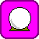

The object of Zane's Tower is to escape. To do this, you must open the Golden Doors. There are three ways to do this - the scroll in the Alien Treasure Box tells you these three methods.
Table of Contents |
|
Before the game can be played, you must answer four questions. The first three determine the size of the Tower.
If a value is entered that does not fall within the valid range, the default value will be used.
The forth questions you'll be asked is "Which level of difficulty?". There are three levels of game play.
The number of rooms depends on the starting dimensions you choose. By default, this will be three by three by five floors, for a total of 45 rooms. Each room has four walls, a floor, and a ceiling. Interior walls appear differently than exterior walls, and the bottom and top floors each have a different floor or ceiling.
To travel from room to room you may walk through archways, open doors, or holes in the wall, or you may climb up ladders and through trap doors, or you may climb down through trap doors or holes in the floor.. Some of these will be closed (clicking on a closed door will open it), some will be locked (this requires a tool to unlock - see below), and some will be secret (clicking on a plain wall or floor may or may not reveal hidden doors). It is also possible to break through damaged walls and floors (be careful walking in rooms with damaged floors, as it is possible to break through and fall!).
Within rooms there may be different "features" - these are things within a room that you may not pick up or kill. These are described below:
Alien Treasure Box: this is the first feature you will encounter in Zane's Tower, as this is in the same room as the Golden Doors (and the same room you start from). The purpose of the Alien Treasure Box is to hold items. Click on the box to reveal what is inside - clicking on items within will pick them up. Items dropped in the room with the Alien Treasure Box will go into the box.
Ladders: In rooms with ladders, you will be able to go through doors and holes in the ceiling. If there is no ladder, you must you special items to travel up. Note: it is possible to see ladders in rooms without there being a trap door or hole in the ceiling - chock this up to Zane the Insane, as there is no way to travel up in such cases.
The Pool: there is a special room in Zane's Tower that is underwater and is entered into (and left from) the circular pool. Be warned: staying under water can cause damage.
Within Zane's Tower, there are a multitude of items that can be picked up and used. These are separated into five categories, and are described below. You may carry only five items at a time.
To use an item, make sure that it is "in hand" (at the top of the inventory). Simply click on the item "in hand" to use it. You may rotate the items "in hand" by clicking .
Clothing: these items are bordered in red. They have the distinction of being worn. Using one of these items will "put it on", meaning that it no longer counts against your carried items.
| Helmet - reduces all damage taken by one point | |
| Armor - reduces all damage taken by half | |
 |
Pearl Ring - allows you to breath underwater, meaning you'll take no damage from staying in the pool |
| Faulty Grav Belt - this device provides just enough anti-gravity support to protect the wearer from falling through damaged floors, and may provide a boost enough to allow the wearer to jump through openings in the ceiling | |
| Boots - increases nimbleness, which enhances combat ability and initiative |
Weapons: these items are able to do damage to monsters, and are bordered in yellow. Some weapons may also have non-combat uses.
| Sword - accurate and deadly, but only good for combat | |
| Sledge Hammer - not-so-accurate, but still deadly. Also great on locked doors and damaged walls and floors | |
| Silver Knife - accurate, but not-so-deadly. Good against monsters that can only be hurt by silver, plus pretty good for picking pesky locks | |
| Rocket Launcher - relatively accurate, but very deadly. Very limited ammo to start, but can be reloaded with rockets (see "containers" below). Can also blast a locked door and a damaged wall, and can even damage a healthy wall | |
| Torch - not-so-accurate, not-so-deadly (normally), and not-so-useful. However, don't face slime without it | |
| Laser Pistol - accurate, deadly, but limited energy. Has a self-energizing power source, and has four different power settings. Note: the higher the setting, the more damage and the more power it consumes. This item recharges over time |
Potions: bordered in green, these bottles can heal damage. There are two types: one has many doses and will heal damage one point per dose. The other has limited doses, but will heal five points each - this potion can also bring you beyond your normal maximum health, but be warned that drinking too many potions can be harmful instead of helpful.
Miscellaneous: anything that is not clothing, a weapon, or a potion, will be bordered in purple. Each of these has a unique use, described below:
| Time Bomb - set this device to go off later, and then be sure to get rid of it! Will destroy pretty much anything in a room (including you, if you're not careful) | |
| Grappling Hook - use this to get through hard-to-reach holes and trap doors | |
| Bag of Holding - this can contain within it up to twenty items, and counts as only one item of your inventory. To use this, see "containers" note below | |
| Magic Map - gives you a "you are here" view of the floor you are on, showing you what rooms you've seen and what areas you haven't | |
| Skeleton Key - guaranteed to unlock (or lock) any door you come across | |
|  | Crystal Ball - using this will reveal all hidden doors within a room |
| Rockets - these are reloads for the Rocket Launcher | |
| Scroll - found in the Alien Treasure Box, will poetically tell you how to escape |
Relics of Zane: the items bordered in blue are relics. The best place for these items of antiquity is in the Alien Treasure Box.
NOTES: Containers: Two items (the Rocket Launcher and the Bag of Holding) are "containers", which means that they can contain other items within them. To place items within "containers", the container should be "in hand" and the other item must be within your inventory. From your inventory window, click on the item to be placed within other, just as you would normally switch the item "in hand". Only Rockets may be placed within the Rocket Launcher. To get items out of the Bag of Holding, click on the Bag of Holding while it's "in hand" - this will open the Bag of Holding window.
Besides items and features, rooms may also contain monsters. Monsters will all attempt to kill you, but some are better at it than others. To kill them first, use weapons. Some monsters are effected by some weapons differently.
If you walk into a room with a monster, and you do not wish to face it, click the button.
To avoid even having to do this, you may click the button to hear if a monster is in the next room.
Below is a screen shot of the game. It is described in depth below.
NOTE: Inventory Control Window
The Inventory Control Window tells you what and how many items you're carrying, what items you're wearing, and what item is "In Hand".
|
Currently, you are wearing Boots, you are carrying a Crystal Ball, Rockets, the Sword, and Armor, and "In Hand" you have the Rocket Launcher.
|
The Items Carried box shows the number of items carried. Note the "5" is in red, this is because if you are carrying five (the maximum number) items, you loose combat effectiveness.
Drop Item is as above, clicking on this will drop the item "In Hand" into the room you're in.
Rotate is as above: clicking on this will rotate your inventory. Specifically, clicking this button will cause the Crystal Ball to become "In Hand", the Rockets to become Item 1, etc. The Rocket Launcher will become Item 4.
And, clicking Close will close this window.
| Manuver | Keyboard |
Number
Pad / Alternate |
| Act, Look, or Go Forward | W |
8 |
| Turn Left | A |
4 |
| Turn Right | D |
6 |
| Go or Look Up | E |
9 |
| Act, Look, or Go Down | C |
3 |
| Pick Up Item | P |
1 |
| Use Item in Hand | U |
5 |
| Open Inventory Window | I |
n/a |
| Drop Item in Hand | H |
Shift+D |
| Change Item in Hand (Rotate Inventory) | R |
n/a |
| Rest | Shift+R |
n/a |
| Listen | L |
n/a |
| Retreat | S |
2 |
| Quit | Shift+Q |
n/a |
| Help | ? |
n/a |